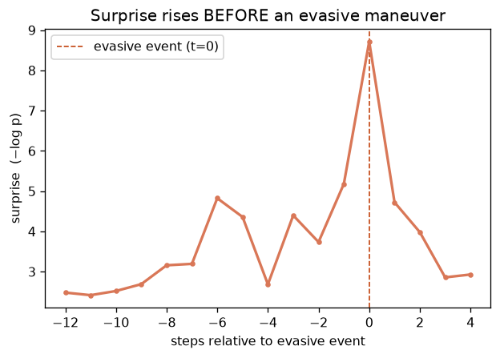
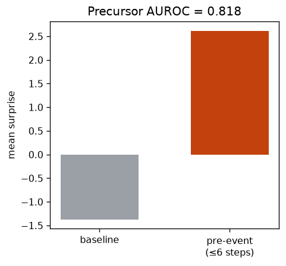

⑤ 事故の前触れを尤度で捉える先行アラーム
尤度(サプライズ)が回避挙動の“前に”立ち上がるかを検証。予兆の先行検知（eHMI proxy）
0.823予兆AUROC
6 step先先読み
2.63 / -1.38pre/base
22,355採点数
1. このデータは何か
①と同じ eHMI フローを流用。held-out(セッション17–20)で、各step の サプライズ = −log p(歩行者移動 | 文脈) を算出。『危険イベント』は急な横移動(|dlat|>97.5%ile)かつ車が近いstep（回避）と定義。
2. 何を・どう学習したか
回避イベントのH=6 step 手前までを陽性ラベルとし、サプライズがそれを先読みできるか AUROC で評価。イベント行自体は採点から除外し（“前触れ”のみを問う）、イベント時刻に整列した平均サプライズ曲線も描く。
3. 結果
予兆 AUROC=0.823（HoloAssistの介入予兆0.57より明確に強い）。回避の直前でサプライズが平常 -1.38 → 直前 2.63 に立ち上がる。＝キネマティクスは危険と直結するため、Cの“タイミング→意味”のミスマッチが起きず、前触れが信号として機能する。

回避イベントに整列した平均サプライズ（t=0の手前で上昇＝先行）

平常 vs 直前のサプライズと予兆AUROC
4. 図の見方
左＝回避イベント(t=0)に整列した平均サプライズ。0の手前で盛り上がる＝先行性。右＝平常 vs 直前の平均サプライズ差。棒の差が予兆の強さ。
5. 解釈と意味・使い道
これはシミュレータ＋回避挙動によるproxy。本番の主張には実事故ラベルが要る（DADA-2000/DoTA が公開、SHRP2 near-crashが金字塔＝申請制）。ただし『尤度は事故の前に下がる』という核が eHMI で確認できた。
条件付き Normalizing Flow（zuko NSF）で自動生成。
NF×生活データ探索シリーズの一部。